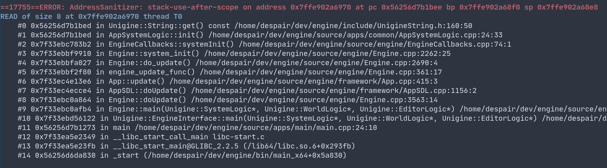

Владислав Грудинин Программист инструментария, UNIGINE
Пример:
У нас можно не бояться
В какой момент у StructWithVec вызывается деструктор?
Address sanitizer
Address sanitizer
Использовать auto
Использовать auto
Использовать structured bindings в C++17
В С++20 в range-loop можно писать init-statement
В С++20 в range-loop можно писать init-statement
Init-statement может быть пустой
Компилируется?
Бонус
С одной стороны это удобно
С другой стороны...
Лучше
Можем поменять значение в хешмапе
Лучше
2 поиска, вместо одного
Лучше
Или даже сегфолт